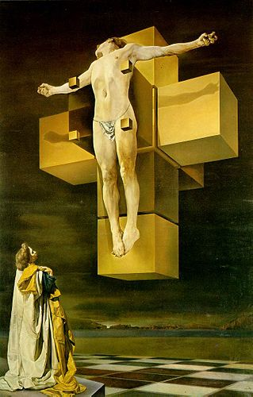

Catastroficamente creativo
Ahiahiahiahi....eccolo arrivato, il nostro curiosone...hai sentito parlare di 4 dimensioni
e ti si sono rizzate le orecchie!?!?! Bene bene: sei pronto per giocare con ...
la matematica?! Sembra un ossimoro, no? E invece vedrai che la matematica può non
solo essere divertente, ma anche stimolare la tua creatività. Provare per credere!
Salvador Dalí, per esempio, ci giocava eccome (e più creativo di lui...)!
La quarta dimensione, in particolare, lo intrigava assai, tanto da spingerlo a
inchiodare uno dei suoi imponenti Cristoni a una croce assai scomoda, a forma di
ipercubo: guardala nella rappresentazione accanto.
Così come la croce rappresenta lo sviluppo piano di un cubo, la figura alla
quale è inchiodato il Cristo dalinano rappresenta lo sviluppo tridimensionale del
suo analogo in dimensione 4, che noi matematici chiamiamo appunto ipercubo: ciò
serve all'artista per comunicare l'idea della trascendenza del Cristo, che vive in
una dimensione superiore a quella che noi umani siamo capaci di concepire.
§
Vediamo di spiegare un pochino di che si tratta: tutti possiamo immaginare un quadrato.
Se "stacchiamo" i due lati che convergono in uno dei suoi vertici, possiamo "aprire"
il quadrato, fino a stenderlo lungo una retta, di cui occupa 4 segmenti consecutivi:
questa figura rappresenta lo sviluppo 1-dimensionale di un quadrato, che di suo vive
nel piano, ovvero in 2 dimensioni.
§
Adesso prendiamo un cubo: tutti possiamo immaginarcelo, ma le cose sono ancora più facili
se lo teniamo in mano, per esempio sotto forma di scatola cubica di cartone, oppure se lo
guardiamo nell'animazione di sinistra, a partire dalla posizione "chiuso". Se tagliamo
lungo tre lati consecutivi il tappo della scatola, e poi tagliamo accuratamente lungo
altri lati (quali?) possiamo, analogamente con quanto fatto prima con il quadrato,
"aprire" il cubo e spalmarlo sul piano di un tavolo: la figura a croce che otteniamo
rappresenta lo sviluppo 2-dimensionale del cubo, che di suo vive invece nello spazio,
ovvero in 3 dimensioni. Prima di farlo, facendo scorrere il cursore dalla posizione
"chiuso" alla posizione "aperto", cerca di immaginartelo: l'hai fatto proprio come lo
fa l'animazione, o l'hai fatto in modo diverso? Secondo te, il cubo si può spiaccicare
sul piano in un modo solo? Se sei curioso di scoprirlo, guarda qui
gmt: Qui bisognerebbe forse aggiungere due parole di spiegazione, ad es. fai click & drag sull'immagine per
cambiare il punto di vista; usa la rotellina del mouse per avvicinarti o allontanarti,
fai click sulle icone qui a sinistra per cambiare il collegamento fra i quadrati e
apri e chiudi il cubo muovendo lo slider qui sotto:
§
Per finire, prendiamo un ipercubo: nessuno di noi se lo può immaginare (almeno credo,
con gli artisti meglio non essere categorici) perché si tratta di un oggetto che vive
in 4 dimensioni, dove la nostra percezione non ci consente di arrivare. Tuttavia possiamo
pensare di fare l'analogo di quanto fatto prima col quadrato e poi col cubo, ovvero
"tagliare" l'ipercubo lungo...lungo cosa?....
'animazione di destra ti darà la risposta, se la osservi muovendo lentamente il
cursore dalla posizione "chiuso" a quella "aperto". Ma non farlo subito, prima prova
a immaginartelo!!!
Se ci pensi, oppure se bari e guardi l'animazione, concluderai che l'ipercubo va tagliato
lungo un insieme di quadrati, che fanno da bordo a cubi, che a loro volta fanno da bordo
all'ipercubo. Se tagli nel modo giusto, puoi "aprire" il tuo ipercubo e
"spalmarlo" ...dove?...nello spazio ordinario, ovvero nello spazio a 3 dimensioni,
dove tutti possiamo vederlo. Quello che vedremo è in realtà lo sviluppo 3-dimensionale
dell'ipercubo, che di suo vive nello spazio 4 dimensionale, ma ci fa il piacere di
lasciarsi spiaccicare in una dimensione inferiore, in modo che Dalí lo possa disegnare!
§
Vogliamo mettere anche qualcosa sulla rappresentazione di schlegel? In mostra c'è
un'animazione (a mio parere piuttosto bruttina) in proposito, a partire da questo quadro
(A proposito del "Discorso sulla forma cubica" di Juan de Herrera)
I crediti, e i riferimenti, e il link dell'università....